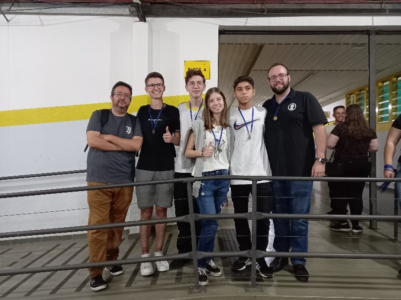
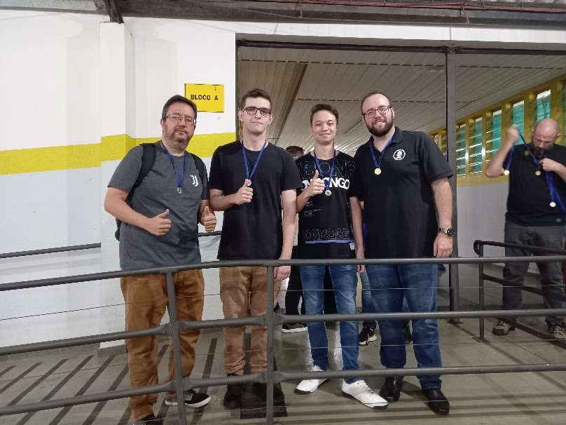
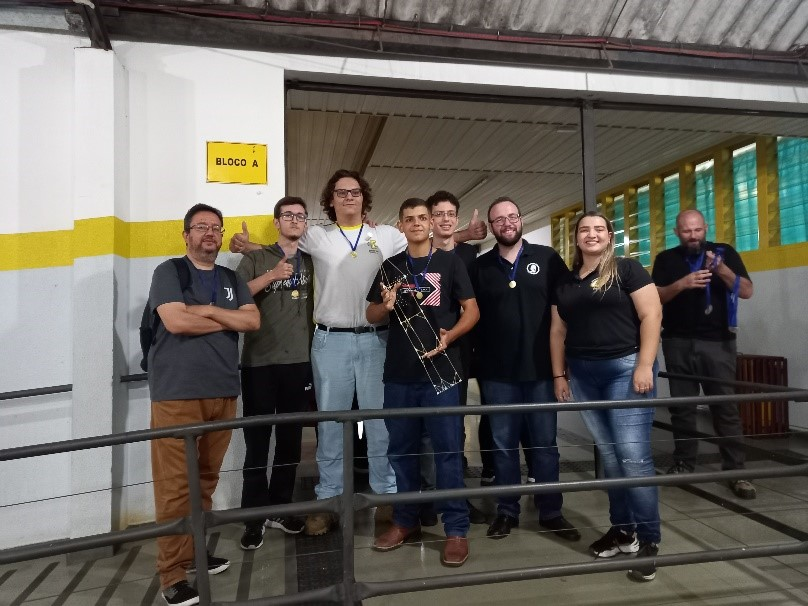

Semana da Engenharia Civil
Desafio: Torre de Macarrão
Um convite, é tudo para que nossos jovens Pinguins precisam para mostrar os seus talentos. E não foi diferente desta vez.
Semana da Engenharia Civil - 2023, o professor Victor Baldan idealizou uma atividade de integração entre faculdade e ensino médio e nos convidou, e é claro que aceitamos o desafio, que era a construção de uma Torre de Macarrão que deve ser capaz de sustentar um Marshmallow no topo.
A atividade em si não é novidade para nós, a professora Cláudia já desenvolve com os alunos desde o Ensino Fundamental nas aulas de laboratório de Ciências, além de ser um desafio no dia da Gincana Nerd.
Mas, participar de um evento com os alunos da faculdade é uma situação diferente, um desafio para mostrar nosso trabalho na frente de todos contra estudantes de um curso de engenharia, mesmo sabendo que não era uma competição direta.
Envolvemos alunos do 1° ao 3° ano do ensino médio, formando um total de 7 equipes com até 4 alunos. Os materiais para a construção são de fácil aquisição : 20 espaguetes, 1 metro de barbante, 1 metro de fita adesiva e um marshmallow. O tempo de construção foi de 35 minutos, logo após o marshmallow é colocado no topo e a torre deve ficar em pé por 15 minutos, qualquer queda e a equipe está desclassificada.
Abaixo temos algumas fotos das nossas equipes com suas construções:
A grande final
"100% de mim não é 1% do time inteiro"
- Eliud Kipchoge
Nosso 3° colocado: João Carlos, Matheus, Letícia e Eduardo do 2° ano do EM
Nosso 2° colocado: Felipe (representado pelo Prof. Flávio), Breno e Saulo do 3° ano do EM
Apresento nosso primeiro colocado, com seus 81cm, a MAIOR de todas as torres!
Por: Pedro, Enzo, Felipe e Guilherme do 2° ano do EM.
Agradecemos ao prof. Victor pelo convite e já estamos ansiosos para as atividades do 2° semestre na construção da ponte de palito.
Escrito por: Professor Flávio Bertasso
Reescrita: Maria Eduarda Martins Furlanetti - 2° ano do EM